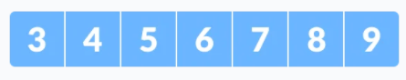
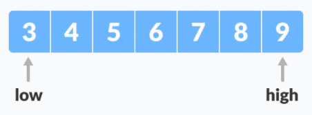
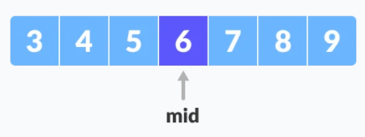
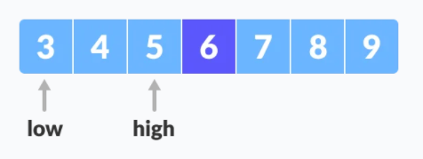
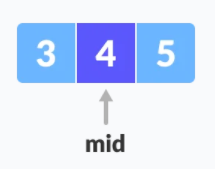
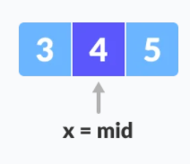

🔢 Algoritmos de búsqueda
Supongamos que tenemos un array (normalmente grande) y necesitamos encontrar uno de sus elementos. Necesitamos un algoritmo para buscar en el array un valor particular, a ese valor lo llamaremos clave (key).
En esta unidad veremos tres algoritmos clásicos:
- 🟩 Búsqueda secuencial (no requiere ordenación)
- 🟦 Búsqueda binaria (requiere array ordenado)
- 🟨 Jump Search o búsqueda por saltos (requiere array ordenado)
🟩 1) Búsqueda secuencial (o lineal)
En la búsqueda secuencial, cada elemento del array se examinará en secuencia hasta que se encuentre la clave (o se llegue al final del array).
La búsqueda secuencial recorre el array de izquierda a derecha, comparando cada elemento con la clave, hasta:
- ✅ encontrarla (éxito), o
- ❌ llegar al final (fallo)
🟢 No necesita que el array esté ordenado.
🧩 Dibujito
Buscamos x = 7:
key = 7
array: [ 3 | 4 | 5 | 6 | 7 | 8 | 9 ]
^ ^ ^ ^ ^
voy comparando uno a uno hasta encontrarlo
💻 Implementación en Java
Si la clave se encuentra, devolvemos su índice. Si no, devolvemos -1.
public class Search {
public static int sequentialSearch(int[] array, int key) {
for (int i = 0; i < array.length; i++) {
if (array[i] == key) {
return i; // encontrado
}
}
return -1; // no encontrado
}
}
📌 Complejidad (Big-O)
Big O notation es una notación para representar la complejidad temporal de un algoritmo, su rendimiento. Generalmente describe el peor escenario, es decir, el máximo tiempo en la mayor cantidad de repeticiones que el algoritmo tiene que ejecutar.
- ⭐ Mejor caso:
O(1)(si la clave está en la primera posición) - 🔥 Peor caso:
O(n)(si está al final o no existe)
🟦 2) Búsqueda binaria
La búsqueda binaria es un algoritmo muy famoso y eficiente para encontrar un elemento en un array ordenado.
⚠️ Requisito importante: el array debe estar ordenado.
Si no está ordenado, no podemos “descartar mitades” con seguridad.
La idea es ir dividiendo el problema por la mitad:
- 🔎 Miramos el elemento del medio.
- ✅ Si es la clave → encontrado.
- ⬅️ Si la clave es menor → buscamos en la mitad izquierda.
- ➡️ Si la clave es mayor → buscamos en la mitad derecha.
- 🔁 Repetimos.
El algoritmo de búsqueda binaria se puede implementar de dos formas diferentes:
- Método iterativo
- Método recursivo. El método recursivo sigue el enfoque de divide y vencerás.
¿Cómo se hace?
- Array ordenado. Sea
x = 4el elemento a buscar.

-
Establezce dos punteros
lowyhighen las posiciones más baja y más alta, respectivamente.

-
Calculamos
mid(posición central).
int mid = low + (high - low) / 2 = 0 + (6 - 0) / 2 = 3;→array[mid] = array[3] = 6
-
Comparamos:
- Si
x == array[mid]→ devolvemosmid. - Si
x < array[mid]→ movemoshighamid - 1. -
Si
x > array[mid]→ movemoslowamid + 1.

-
Repetimos los pasos 3 a 6 mientras que
lowsea menor igual quehigh.

-
🎉 ¡Encontrado!
x = 4se ha encontrado.
💻 Implementación en Java con bucles (iterativa)
public class Search {
public static int binarySearch(int[] array, int key) {
int low = 0;
int high = array.length - 1;
while (low <= high) {
int mid = low + (high - low) / 2; // evita overflow
if (array[mid] == key) return mid;
if (key < array[mid]) {
high = mid - 1; // izquierda
} else {
low = mid + 1; // derecha
}
}
return -1; // no encontrado
}
}
📌 Complejidad (Big-O)
- ⭐ Mejor caso:
O(1)(si justo cae en elmida la primera) - 🚀 Peor caso:
O(log n)(cada paso descarta media búsqueda)
🟨 3) Jump Search (búsqueda por saltos)
Jump Search es un algoritmo para arrays ordenados que combina dos ideas:
- 🦘 Da saltos de tamaño fijo (
step) para localizar el bloque donde puede estar la clave. - 🟩 Luego hace una búsqueda secuencial solo dentro del bloque encontrado.
✅ Necesita que el array esté ordenado.
(igual que binaria: si no está ordenado, no sabemos si “ya nos hemos pasado”)
🧩 Variables que usamos:
- step: tamaño del salto (lo típico es ⌊√n⌋)
- prev: inicio del bloque actual
- blockEnd: final del bloque actual (normalmente min(step, n))
🧩 Dibujito (idea)
Array ordenado y buscamos x = 7.
Elegimos step = 3 (por ejemplo):
índices: 0 1 2 3 4 5 6
array: [3 | 4 | 5 | 6 | 7 | 8 | 9]
saltos: ^ ^
(2) (5)
5 < 7 8 >= 7 -> ✅ ¡bloque encontrado!
bloque: [6 | 7 | 8]
^ ^
miro uno a uno dentro del bloque
🧠 ¿Cómo elegir el salto?
Lo típico es step = ⌊√n⌋.
📌 Con esa elección, el algoritmo suele tardar aproximadamente O(√n) en el peor caso.
💻 Implementación en Java
public class Search {
public static int jumpSearch(int[] array, int key) {
int n = array.length;
if (n == 0) return -1;
int step = (int) Math.floor(Math.sqrt(n));
int prev = 0;
int blockEnd = step;
// 1) 🦘 Saltos por bloques hasta encontrar un bloque candidato
while (prev < n && array[blockEnd - 1] < key) {
prev = blockEnd;
blockEnd += step;
if (blockEnd >= n) blockEnd = n;
if (prev >= n) return -1;
}
// 2) 🟩 Búsqueda lineal dentro del bloque [prev, blockEnd)
for (int i = prev; i < blockEnd; i++) {
if (array[i] == key) return i;
}
return -1;
}
}
📌 Complejidad (Big-O)
- ⭐ Mejor caso:
O(1)(si cae al principio) - 🟨 Peor caso:
O(√n)(saltos + búsqueda dentro del bloque)
🧾 Resumen rápido
| Algoritmo | ¿Requiere array ordenado? | Peor caso |
|---|---|---|
| 🟩 Secuencial | ❌ No | O(n) |
| 🟦 Binaria | ✅ Sí | O(log n) |
| 🟨 Jump Search | ✅ Sí | O(√n) |